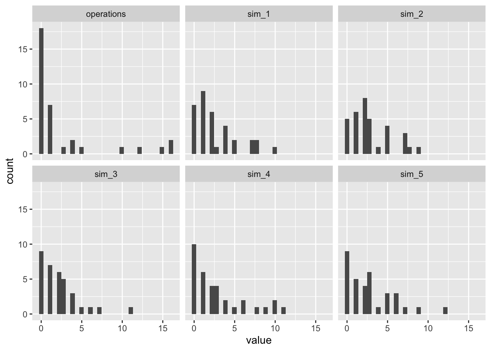
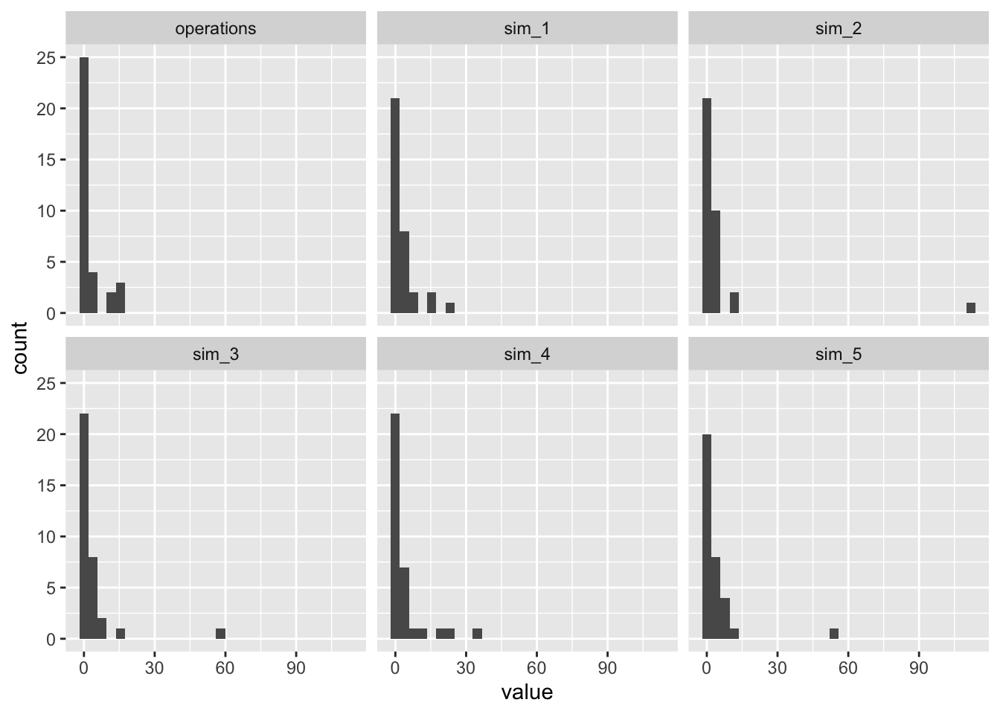
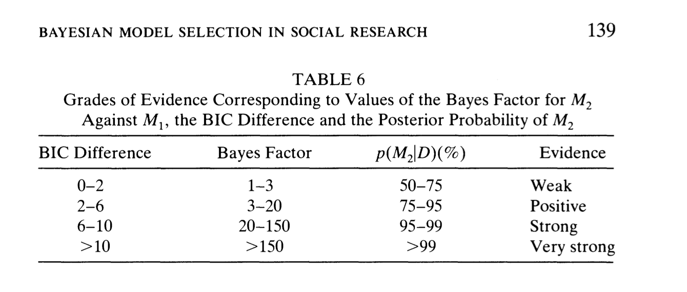
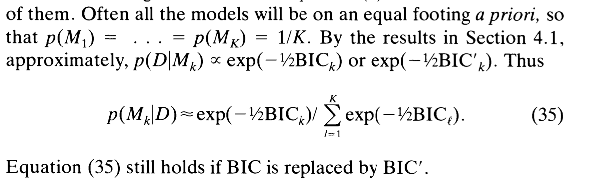

# load package
library(tidyverse)
# load data for santiago
sant <- crdata::holland2015 |>
filter(city == "santiago")
# formula corresponds to model 1 for each city in holland (2015) table 2
f <- operations ~ lower + vendors + budget + population
# poisson regression
pois_fit <- glm(f, family = poisson, data = sant)
# nb regression
nb_fit <- MASS::glm.nb(f, data = sant)14 Information Criteria
Suppose we are modeling Holland’s (2015) enforcement operations in Santiago. We have two immediate choices.
- Poisson regression: the simplest regression model for count outcomes, but usually avoided because the Poisson distribution assumes the mean equals the variance.
- Negative binomial regression. Slightly more complicated model, but usually preferred as a default because it allows for overdispersion so that the variance is greater than the mean.
How can we choose among these models?
14.1 Predictive distributions
To guide our choice between the relative strengthos of these models, predictive distributions are excellent. In my mind, they are one of the most useful tools for model checking.
# simulate from predictive distribution for poisson
pois_sims <- simulate(pois_fit, nsim = 5)
head(pois_sims) sim_1 sim_2 sim_3 sim_4 sim_5
1 2 5 0 3 3
2 2 1 1 0 0
3 0 0 0 0 1
4 4 1 1 1 3
5 5 2 1 0 3
6 1 1 2 0 0To evaluate the fit of the model, we can compare the simulated outcomes to the observed.
# observed data
mean(sant$operations)[1] 2.705882sd(sant$operations)[1] 4.939203# simulations
apply(pois_sims, 2, mean) sim_1 sim_2 sim_3 sim_4 sim_5
2.647059 2.911765 2.205882 2.911765 2.823529 apply(pois_sims, 2, sd) sim_1 sim_2 sim_3 sim_4 sim_5
2.717869 2.478607 2.396707 3.324543 2.896922 We can also plot the simulations.
Code
# plot
bind_cols(sant, pois_sims) |>
pivot_longer(cols = c(operations, starts_with("sim_"))) |>
separate(name, into = c("type", "sim_id"), sep = "_", remove = FALSE) |>
ggplot(aes(x = value)) +
facet_wrap(vars(name)) +
geom_histogram(center = 0, width = 1)
# simulate from predictive distribution for nb
nb_sims <- simulate(nb_fit, nsim = 5)
head(nb_sims) sim_1 sim_2 sim_3 sim_4 sim_5
1 1 1 0 0 0
2 0 0 0 0 0
3 0 0 1 1 0
4 16 0 0 0 0
5 0 2 2 0 0
6 3 1 1 0 2To evaluate the fit of the model, we can compare the simulated outcomes to the observed.
# observed data
mean(sant$operations)[1] 2.705882sd(sant$operations)[1] 4.939203# simulations
apply(nb_sims, 2, mean) sim_1 sim_2 sim_3 sim_4 sim_5
2.911765 4.911765 3.558824 3.500000 3.411765 apply(nb_sims, 2, sd) sim_1 sim_2 sim_3 sim_4 sim_5
5.287880 19.103177 10.100079 7.770379 9.733160 We can also plot the simulations.
Code
# plot
bind_cols(sant, nb_sims) |>
pivot_longer(cols = c(operations, starts_with("sim_"))) |>
separate(name, into = c("type", "sim_id"), sep = "_", remove = FALSE) |>
ggplot(aes(x = value)) +
facet_wrap(vars(name)) +
geom_histogram(center = 0, width = 1)
14.2 Information criteria
We can use information criteria for a similar purpose, but they are much similar.
Information criteria have the following general structure:
\[ -2 \ell(\hat{\theta}) + [\text{constant}\times k ] \]
Here, \(\ell(\hat{\theta}) = \log L(\hat{\theta})\) is the maximized log-likelihood function (not the \(\hat{\theta}\), but the value of \(\log L\) itself at \(\hat{\theta}\)), \(k\) is the total number of parameters (including intercept, variance, scale, etc.), and \(\text{constant}\) is a constant term that varies across information criteria.
The two most common information criteria are:
- Akaike Information Criterion (AIC) \(= -2 \log L(\hat{\theta}) + [2 \times k]\)
- Bayesian Information Criterion (BIC) \(= -2 \log L(\hat{\theta}) + [\log(n) \times k]\)
The AIC and BIC have a deep and detailed theoretical development—the choice of constant is not at all arbitrary. I don’t reproduce the theory here, but instead mention a few practical points.
- The magnitude of the IC is generally not of interest. Instead, focus on the difference in the IC between models.
- Both the the AIC and the BIC work to identify the “best” model, but in two difference senses:
- The AIC roughly compares the observed and predictive distributions are tries to identify the best match.
- The BIC roughly identifies the model with the highest posterior probability—the most likely model to have generated the data.
- Both AIC and BIC penalize adding parameters. That is, in order to improve the IC, a more complex model must improve the fit enough to offset the additional penalty. That said, the BIC imposes a larger penalty for \(n \geq 8\).
The table below from Raftery (1995) summarizes a rough interpretation of the magnitude of differences between BICs below (and the same applies for AICs as well.
Raftery, Adrian E. 1995. “Bayesian Model Selection in Social Research.” Sociological Methodology 25: 111. https://doi.org/10.2307/271063.

To compute the AIC and BIC, we have the easy-to-use AIC() and BIC() functions.
AIC(pois_fit, nb_fit) df AIC
pois_fit 5 226.7905
nb_fit 6 133.6848BIC(pois_fit, nb_fit) df BIC
pois_fit 5 234.4223
nb_fit 6 142.8430To ease interpretation, we can convert these AIC and BIC to weights. Raftery argues that we can interprete these as the probability that each model is correct (assuming the correct model is in the set).

BIC(pois_fit, nb_fit) |>
mutate(diff_min = BIC - min(BIC),
post_prob = exp(-0.5*diff_min)/sum(exp(-0.5*diff_min))) df BIC diff_min post_prob
pois_fit 5 234.4223 91.57931 1.299588e-20
nb_fit 6 142.8430 0.00000 1.000000e+00We can do something similar with the AIC. I refer to these as “Akaike weights.” See Wagenmakers and Farrell (2004) for more on this. As with BIC, we shouldn’t take these weight too seriously, but they do give us an idea of how much the IC like each model.
Wagenmakers, Eric‐Jan, and Simon Farrell. 2004. “AIC Model Selection Using Akaike Weights.” Psychonomic Bulletin & Review 11 (1): 192–96. https://doi.org/10.3758/BF03206482.
AIC(pois_fit, nb_fit) |>
mutate(diff_min = AIC - min(AIC),
akaike_weights = exp(-0.5*diff_min)/sum(exp(-0.5*diff_min))) df AIC diff_min akaike_weights
pois_fit 5 226.7905 93.10567 6.05844e-21
nb_fit 5 133.6848 0.00000 1.00000e+00You can see that (as is common), both the BIC and AIC strongly prefer the negative binomial model over the Poisson model.